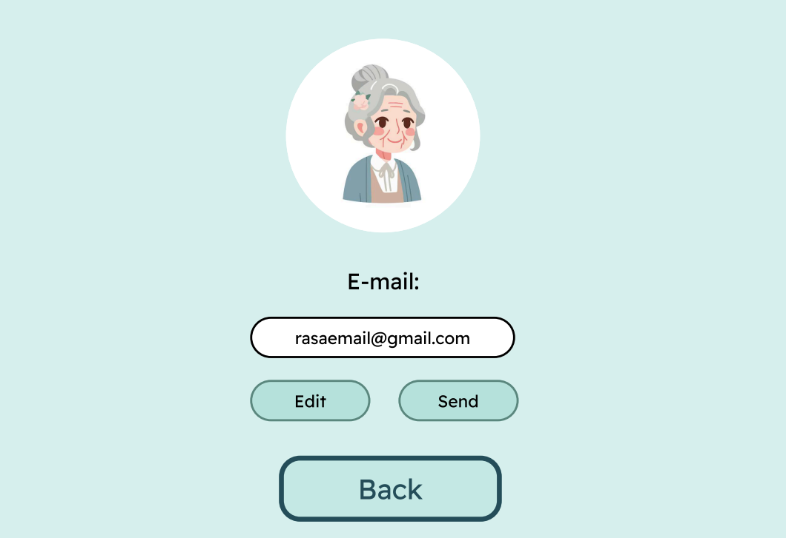
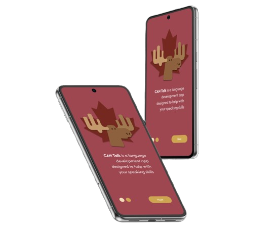
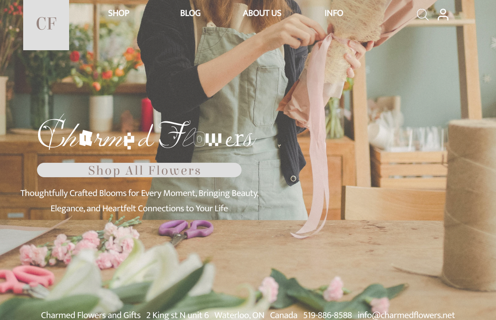
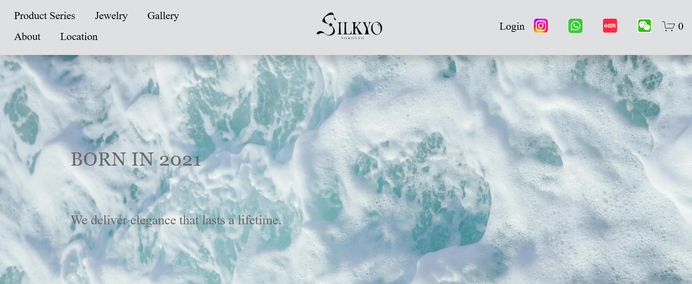

UI/UX DESIGN
& DEV
Attention to detail and aesthetics to create visually stunning and user-centric web designs.
01 / Academic Projects

ER to Home
An accessible kiosk system and printed booklet designed to ensure safe hospital discharges for elderly patients.
VIEW CASE STUDY →
Memento
A digital memory archive that transforms personal experiences into visual stories using elegant UI design.
VIEW CASE STUDY →
CanTalk
A language learning app with intuitive design and smooth user interactions, making communication accessible.
VIEW CASE STUDY →
Charmed Flower
A comprehensive visual identity and website redesign for a local boutique florist, focusing on organic aesthetics.
VIEW PROTOTYPE →02 / Work Experience
Silkyo Website
The official website for Silkyo. I led the front-end development and UI design, focusing on creating a seamless e-commerce experience that reflects the brand's modern urban aesthetic.
View Case Study →